Analyze Project Dependencies
Use the Dependency Analyzer to perform a dependency analysis on your project. You can run a dependency analysis at any point in your workflow. In a collaborative environment, you typically check dependencies:
When you set up or explore a project for the first time
When you run tests to validate changes to your design
Before you submit a version of your project to source control
Before you share or package your project
To explore a project and visualize its structure using different views, see Explore the Dependency Graph, Views, and Filters.
To find and fix problems in your project, see Investigate and Resolve Problems.
To assess how a change will affect other project files, see Find File Dependencies.
To find add-ons and products required by your project to run properly, see Find Required Products and Add-Ons.
Run a Dependency Analysis
Before running a dependency analysis on a project, make sure that you have added all your files to the project. For more information, see Add Files to Project.
To start analyzing your project, in the Project toolstrip, in the Tools gallery, click Dependency Analyzer.
To analyze the dependencies of specific files, in the dependency graph, select the files. In the Impact Analysis section, click All Dependencies or use the context menu and select Find All Dependencies.
To analyze the dependencies inside add-ons, select Analyze > Add-Ons. For more details about available options, see Dependency Analyzer Scope and Limitations.
You can also check dependencies directly in Project. In the Project Files view, right-click the project files you want to analyze and select Find Dependencies.
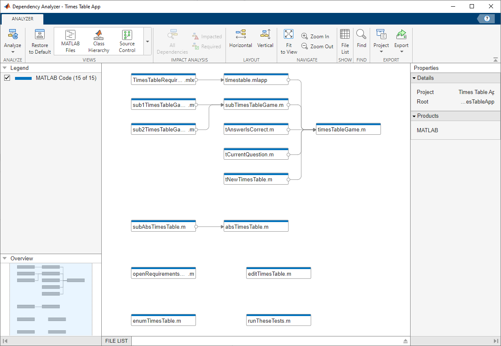
The dependency graph shows:
Your project structure and its file dependencies, including how files such as models, libraries, functions, data files, source files, and derived files relate to each other.
Required products and add-ons.
Relationships between source and derived files (such as
.mand.pfiles,.slxand.slxp,.sscand.sscp, or.cand.mexfiles), and between C/C++ source and header files. You can see what code is generated by each model, and find what code needs to be regenerated if you modify a model.Warnings about problem files, such as missing files, files not in the project, files with unsaved changes, and out-of-date derived files.
You can examine project dependencies and problem files using the File List. In the toolstrip, click File List.
After you run the first dependency analysis of your project, subsequent analyses incrementally update the results. The Dependency Analyzer determines which files changed since the last analysis and updates the dependency data for those files. However, if you update add-ons or installed products and want to discover dependency changes in them, you must perform a complete analysis. To perform a complete analysis, in the Dependency Analyzer, click Analyze > Reanalyze All.
For more information about running a dependency analysis on Simulink® models and libraries, see Find Dependencies of Selected Files (Simulink).
Explore the Dependency Graph, Views, and Filters
The dependency graph displays your project structure, dependencies, and how files relate to each other. Each item in the graph represents a file and each arrow represents a dependency. For more details, see Investigate Dependency Between Two Files.
By default, the dependency graph shows all files required by your project. To help you investigate dependencies or a specific problem, you can simplify the graph using one of the following filters:
Use the filtered Views to color the files in the graph by type, class, source control status, and label. See Color Files by Type, Status, or Label.
Use the check boxes in the Legend pane to filter out a group of files.
Use the Impact Analysis tools to simplify the graph. See Find File Dependencies.
Select, Pan, and Zoom
To select an item in the graph, click it.
To select multiple files, press Shift and click the files.
To select all files of a certain type, hover the pointer over the corresponding item in the Legend pane and click the Add to selection icon.
To clear all selection, click the graph background.
To remove all files of a certain type from the current selection, hover the pointer over the corresponding item in the Legend pane and click the Remove from selection icon.
To open a file, double-click it.
To pan the dependency graph, hold the Space key, click and drag the mouse. Alternatively, press and hold the mouse wheel and drag.
For large graphs, navigate using the Overview pane.
To zoom in and out, in the Navigate section, click Zoom In and Zoom Out. Alternatively, use the mouse wheel.
To center and fit the dependency graph to view, in the Navigate section, click Fit to View. Alternatively, press the Space bar.
Investigate Dependency Between Two Files
To see more information about how two files are related, select their dependency arrow. In the Properties pane, in the Details section, you can see the full paths of the files you are examining, the dependency type (such as function call, inheritance, and property type), and where the dependency is introduced.
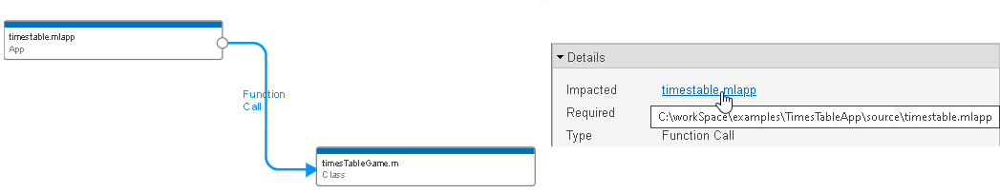
To open the file and highlight where the dependency is introduced, in the Details section, click the link under Impacted.
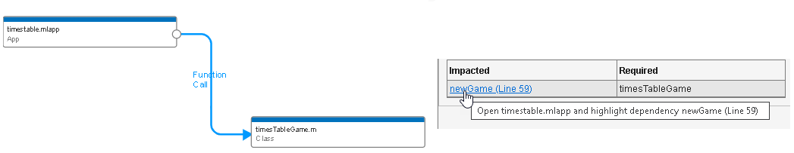
Color Files by Type, Status, or Label
Explore the different views in the Views section of the Dependency Analyzer toolstrip to explore your project files dependencies.
The MATLAB Files view shows only MATLAB® files (such as
.m,.mlx,.p,.mlapp,.fig,.mat, and.mex) in the view and colors them by type.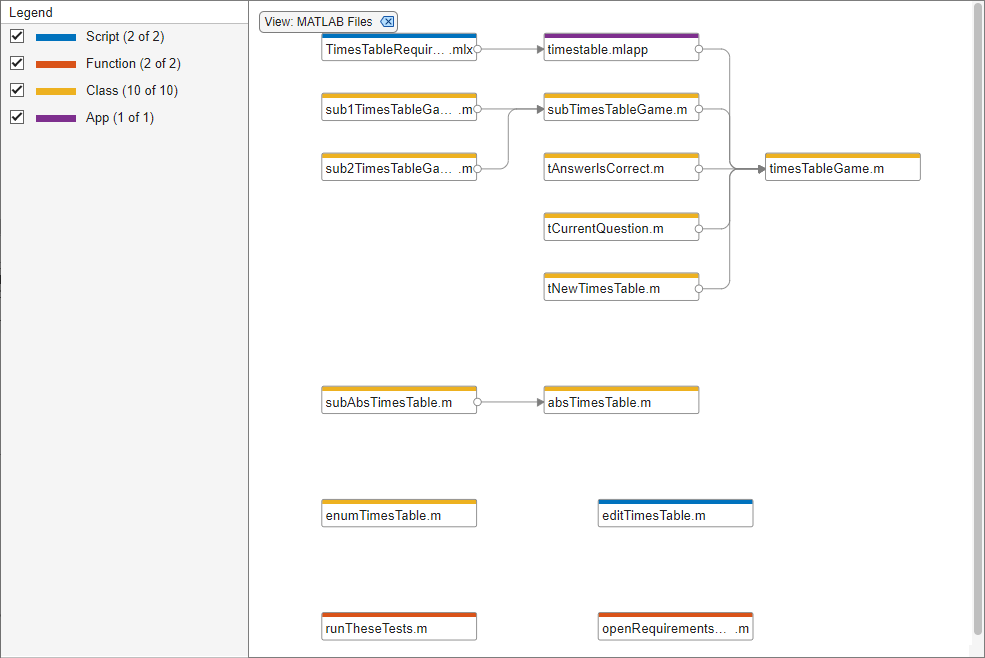
The Class Hierarchy view shows the class inheritance graph and colors the files by type (class, enumeration class, or abstract class). If the class is not on the search path, the Dependency Analyzer cannot determine the class type.
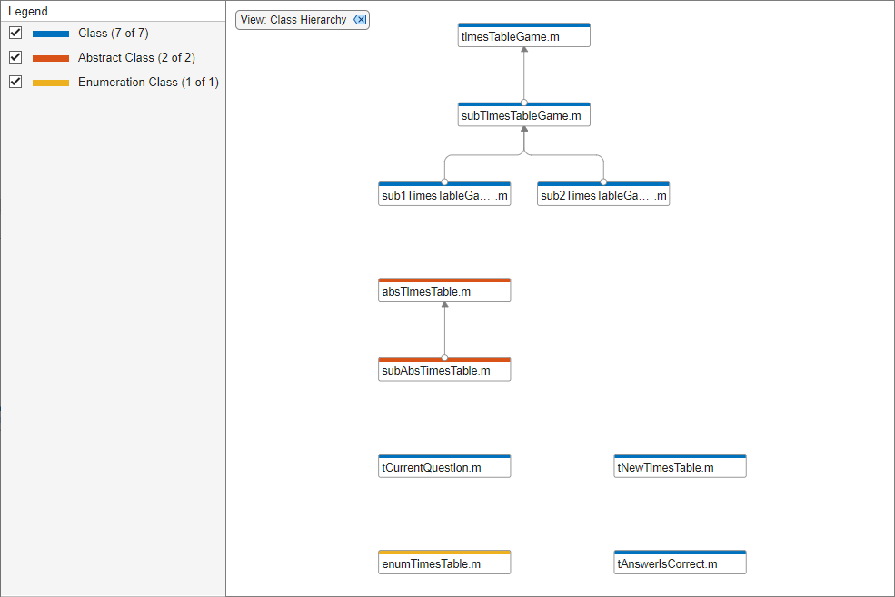
The Classification view shows all files in the graph and colors them by file label (such as test, design, and artifact).
Use the classification view to identify which tests you need to run to validate the changes in your design. For more information, see Identify Tests to Run.
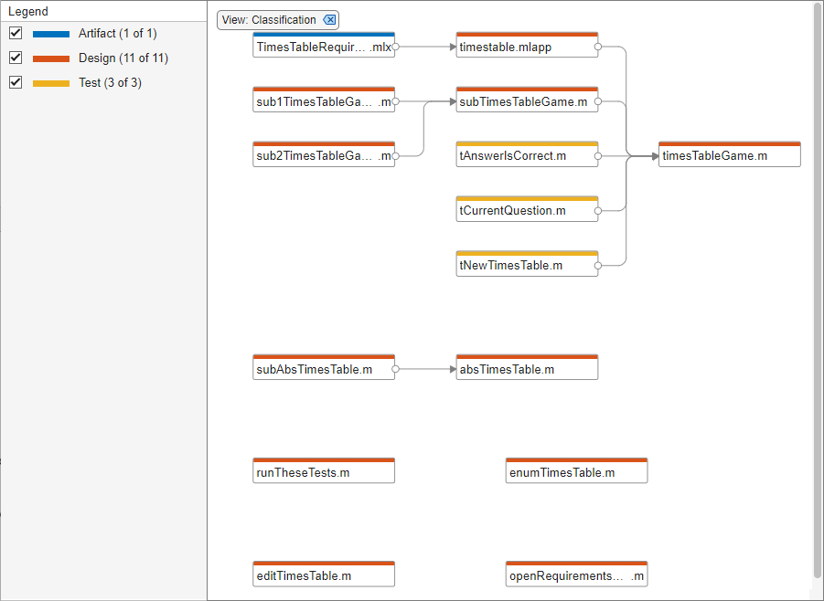
The Source Control view shows all files in the graph and colors them by source control status. This view is only enabled if your project is under source control.
Use the source control view to find modified files in your project and to examine the impact of these changes on the rest of the project files. For more information, see Investigate Impact of Modified Files.
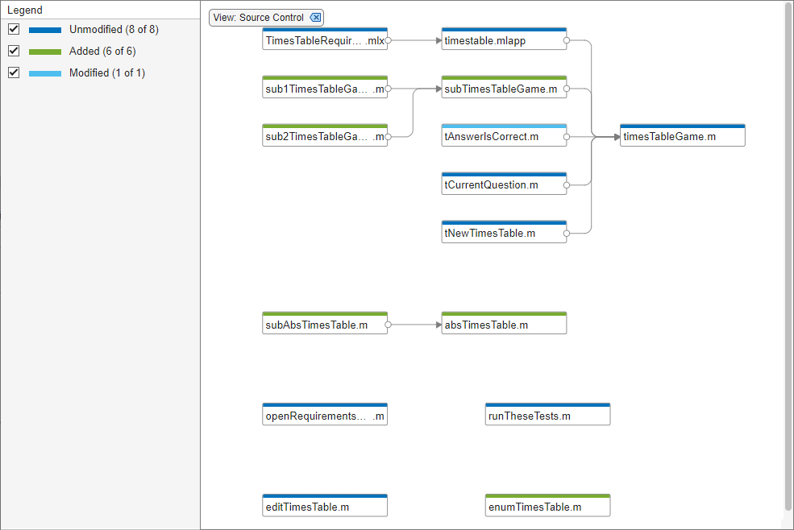
The Project Hierarchy view shows all projects in your project hierarchy in the graph and colors them by project type, top-level or referenced project.
Use the project hierarchy view to investigate how projects in your hierarchy relate to each other and identify missing projects or projects that introduce circular dependencies.
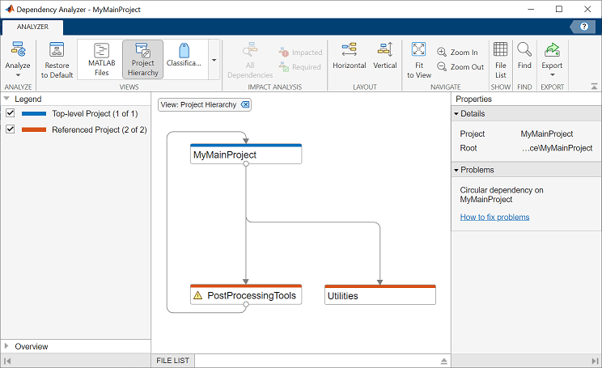
Restore to Default clears all filters.
This is equivalent to manually removing all of the filters. Filters appear at the top of the graph. For example, if you have the Source Control view selected, you can remove it by clicking 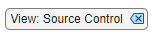.
Apply and Clear Filters
In large projects, when investigating problems or dependencies, use the different filters to show only the files you want to investigate:
To filter out a subgroup of files from the graph, such as files labeled
testor modified files, use the check boxes in the Legend pane. To remove the legend filter, click the Legend Filter 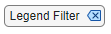.To color the files in the graph by type, class, label, or source control status, use the Views. To remove the view filter, click View:
viewNameat the top of the graph. For example, if you have the Source Control view selected, you can remove it by clicking .To show only the dependencies of a specific file, select the file and, in the Impact Analysis section, click All Dependencies. The graph shows the selected file and all its dependencies. To reset the graph to show all project dependencies, remove the filter at the top of the graph. For example, if you filtered by all dependencies of
timestable.mlapp, to remove the filter click .
.To clear all filters and restore the graph to show all analyzed dependencies in the project, click Restore to Default. Alternatively, manually remove all filters at the top of the graph.
Investigate and Resolve Problems
When you run a dependency analysis, the Dependency Analyzer identifies problems, such as missing files, files not in the project, unsaved changes, and out-of-date derived files. You can examine problem files using the dependency graph or the file list. When no file is selected, the Properties pane on the right shows the add-ons dependencies and a list of problems for the entire project.
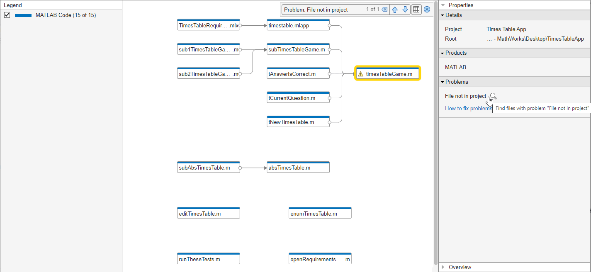
Use the graph to investigate problem files graphically.
In the Properties pane, in the Problems section, point to a problem, such as
File not in project, and click the magnifying glass icon . The graph highlights the files with this specific problem.To go through these files, use the arrows in the search box (e.g., Problem:
File not in project).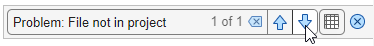
To undo the highlighting, close the search box.
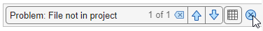
To see more information about a specific problem file, select the file in the graph. In the Properties pane, in the Problems section, you can see details including the path, type, and the problems for this file.
For example, if a file is
File not in project, right-click the problem file in the graph and select Add to Project.Investigate the next problem listed in the Problems section. Repeat the steps until you resolve all problems. For more details on how to fix problems, see Resolve Problems.
To update the graph and the Problems list, click Analyze.
Tip
For large projects, viewing the results in a list can make navigation easier.
For large projects, use the File List to investigate your project problem files.
In the Dependency Analyzer toolstrip, click File List.
In the Properties pane, in the Problems section, point to a problem, such as
File not in project, and click the magnifying glass icon .The File List shows only files with the specific problem. Select all the files in the list and use the context menu to Add to Project.
Investigate the next problem listed in the Problems section, for example
Missing file. Repeat the steps until you resolve all problems.To update the graph and the Problems list, click Analyze.
Resolve Problems
For each problem file, take actions to resolve the problem. This table lists common problems and describes how to fix them.
Problem Message | Description | Fix |
|---|---|---|
File not in project | The file is not in the project. | Right-click the problem file in the graph and select Add to Project. To remove a file from the problem list without adding it to the project, right-click the file and select Hide Warnings. |
Missing file | The file is in the project but does not exist on disk. | Create the file or recover it using source control. |
The file or variable cannot be found. | If this status is acceptable, right-click the file and select Hide Warnings. Depending on the way you call an object method, the Dependency Analyzer might confuse a method with a function and report a missing dependency. See Dependency Analyzer Scope and Limitations. | |
Outside project root | The file is outside the project root folder. | If this status is acceptable, right-click the file and select Hide Warnings. Otherwise, move it under the project root. If required files are outside your project root, you cannot add these files to your project. This dependency might not indicate a problem if the file is on your path and is a utility or resource that is not part of your project. Use dependency analysis to ensure that you understand the design dependencies. |
| In unreferenced project | The file is within a project that is not referenced by the current project. | Add the project containing the file as a project reference. |
Unsaved changes | The file has unsaved changes in the MATLAB and Simulink editors. | Save the file. |
Derived file out of date | The derived file is older than the source file it was derived from. | Regenerate the derived file. If it is a
If you rename a source file, the project detects the impact to the derived file and prompts you to update it. |
| Created in a newer release | The file is created in a newer release than the one currently used. For example, the file is a Simulink model file created in a newer Simulink release. The Dependency Analyzer warns and does not analyze the file. | If this status is acceptable, right-click the file and select Hide Warnings. Otherwise, open the model in the release you used to create it and export to a previous version. See Export Model to Previous Version of Simulink (Simulink). |
| Not a valid file format | The file is not a format supported by MathWorks® products. For example, the file has
| If this status is acceptable, right-click the file and select Hide Warnings. |
| File with syntax error | The file contains a syntax error or the Dependency
Analyzer cannot parse the file. For example, the file is an
| If this status is acceptable, right-click the file and select Hide Warnings. Otherwise, fix the syntax error and save the file. |
Product not installed | The project has a dependency on a missing product. | Install the missing product. Note If you use For models that contain built-in blocks or library links from missing products, you see labels and links to help you fix the problem in the Simulink Editor.
To find a link to open Add-On Explorer and install the product:
Product dependencies can occur in many other ways, for example in callbacks, so in this case you cannot easily see where the missing product is referenced. Fix models by installing missing products. |
Missing package dependency | The project does not declare a dependency on a required package. | Declare a dependency on the required package. For more
information, see |
Circular dependency on
| The project hierarchy contains a circular dependency. | Break the circular dependency. For example, if the
reference to If
the reference to This warning is specific to the Project Hierarchy view. |
Missing Project | Top-level project declares a dependency on a missing referenced project. | If the reference to the missing project is not needed, because you renamed the project folder for example, remove the project from the list of the top-level project references. If the reference to the missing project is needed, make sure that you have the project on disk in the specified path. This warning is specific to the Project Hierarchy view. |
Find Required Products and Add-Ons
After running a dependency analysis on a project, the graph shows the required products and add-ons for the whole project or for selected files. You can see which products are required to use the project or find which file is introducing a product dependency.
In the Dependency Analyzer, in the Properties pane, the Products and Add-Ons sections display the required products and add-ons and packages for the whole project. To view products or add-ons required by a specific file, select a file by clicking the graph.
To find which file is introducing a product dependency, point to the product or add-on name and click the magnifying glass icon . The graph highlights the files that use the selected product.
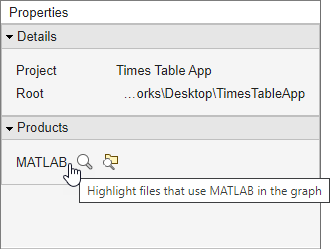
To go through these files, use the arrows in the search box (e.g., Files
using "productName").

To undo the highlighting, close the search box.
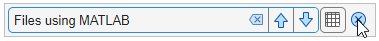
To investigate further, you can list the files that use a product and examine
where in these files the dependency is introduced. In the
Products and Add-Ons sections, point
to product or add-on name and click the search folder icon
 .
.
If a required product is missing,
the products list labels it as missing. The product is also listed in the
Problems section as
productName not installed.
To resolve a missing product, install the product and rerun the dependency
analysis.
Find File Dependencies
To investigate the dependencies of a file after running a dependency analysis, in the dependency graph, select a file.
In the Impact Analysis section, click All Dependencies. The graph shows the selected file and all its dependencies.
To show only files needed by the selected file to run properly, click Required.
To show only files impacted by a potential change to the selected file, click Impacted.
Finding these dependencies can help you identify the impact of a change and identify the tests you need to run to validate your design before committing the changes.
To investigate the dependencies of multiple files, click files while holding the Shift key. The Impact Analysis section displays how many files are selected.
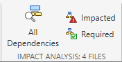
To reset the graph, click the filter at the top of the graph. For example, if you
had filtered by files impacted by timestable.mlapp, click
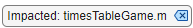.
Investigate Impact of Modified Files
To examine the impact of the changes you made on the rest of the project files, perform an impact analysis on the modified files in your project.
In the Views section, select the Source Control view. The graph colors the files by their source control status. The modified files are in light blue.
Select all the modified files in the graph.
Alternatively, add all modified files to selection by clicking the Add to selection icon of an item in the Legend pane.
Tip
If you changed a large number of files, you can also use the file list.
In the Dependency Analyzer toolstrip, click File List. Point to Status and click the arrow to sort the list by the source control status. Select all the modified files.
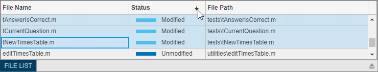
In the Impact Analysis section, click Impacted. Alternatively, use the context menu and select Find Impacted.
Identify Tests to Run
To identify the tests you need to run to validate your design before committing the changes, use the Classification view when you perform an impact analysis on the file you changed.
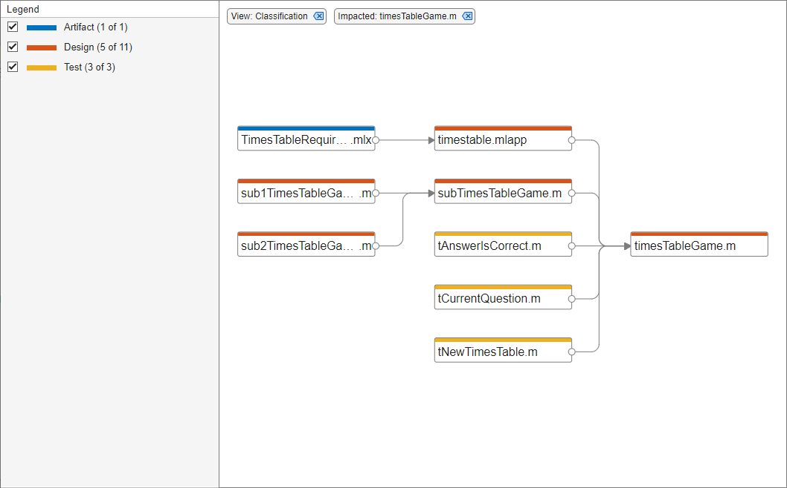
In the Views section, select the Classification view. The graph colors the files by their project label.
Select the file you changed, for example
timesTableGame.m.In the Impact Analysis section, click Impacted. Alternatively, use the context menu and select Find Impacted.
The example graph shows three tests you need to run to qualify the change made to
timesTableGame.m.
Export Dependency Analysis Results
To export all the files displayed in the dependency graph, click the graph background to clear the selection on all files. In the Dependency Analyzer toolstrip, in the Export section, click Export. Select from the available options:
Save to Workspace — Save file paths to a variable in the workspace.
Generate Dependency Report — Save dependency analysis results in a printable report (HTML, Word, or PDF).
Package as Archive — Export files in the graph as an archive.
Save as GraphML — Save dependency analysis results as a GraphML file.
Tip
You can compare different analysis results without having to repeat the analysis. To compare previously saved graphs, in MATLAB, in the Current Folder, right-click two GraphML files and select Compare Selected Files/Folders.
Save as Image — Save displayed dependency graph as an image.
To export a subset of files in the graph, select the files, then click Export.
Use the Legend check boxes, the filtered Views, or the Impact Analysis tools to simplify the graph.
To select multiple files, press Shift and select the files.
To select all files in the filtered graph, press Ctrl+A.
The menu displays how many files are selected. The Dependency Analyzer exports only the selected files.

Note
When you use Package as Archive, the Dependency Analyzer includes the selected files and all their dependencies in the archive.
Send Files to Project Tools
You can send files to other Project tools using the Project menu. The Dependency Analyzer exports only the selected files in the current filtered view.
Select the desired files. In the Dependency Analyzer toolstrip, in the Export section, click Project. Select from the available options:
Show in Project — Switch to the Project panel with the files selected.
Send to Custom Task — Run a project custom task on the selected files.